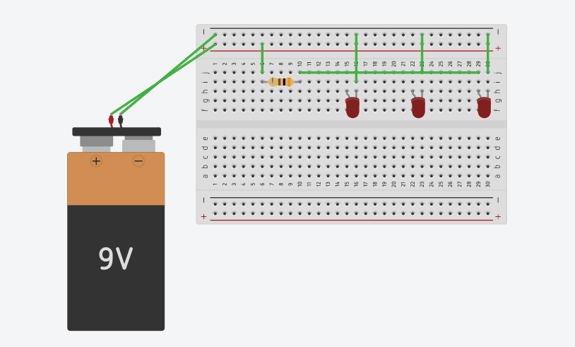
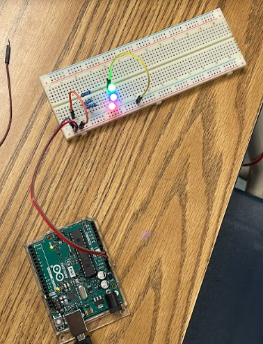
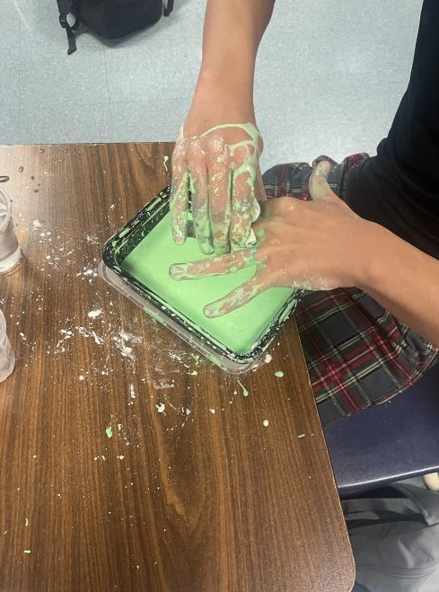

9/2/2022 - Created an account on tinkercad.com and learned how to utilize its tools and shapes. The challenge of the day was to recreate a kitchen home appliance based on a google image in tinkercad with the most detail possible.

9/16/2022 - This week, we started building our Rube Goldberg Machine and on Friday our challenge was to make a paper boat and have it hold the most amount of weight without sinking in 5 minutes.
9/23/2022 - We finished building our Rube Goldberg Machine. Our main problems were the car getting stuck or the cup not pushing the car enough for it to go down the ramp. Our machine was also very unstable. It needed more of a foundation so that it wouldn't easily fall or sway too much to one side. We were able to somewhat fix it by adding lots of tape but it just barely holds up
9/30/2022 - First day of class, we listened to a guest speaker named Steven and he worked at Western Digital. Steven was able to gave us some insight into Computer Engineering and what it's like in that career field. Afterwards, we began "dissecting" a laptop by taking it apart and labeling each part on a worksheet with different colors. On Friday, we skipped the challenge and just continued to disassemble and reassmble the laptop.

10/7/2022 - We listened to a presentation about bioengineering and looked at different types of prosthetics. On tinkercad, we had to design an animal prosthetic. This could be any animal and any type of prosthetic. I decided to design a horse leg prosthetic and designed it with the joints in mind so that the prosthetic could move like a real horse leg. For the challenge, we had to write down the steps to make a PB&J sandwich. These directions are supposed to be taken very literally and had to be very specific.

10/13/2022 - We're starting our next big project which is to make a bottle rocket and have it travel the farthest distance in the end. First we had to make a list of materials we needed and to sketch a design of the rocket. Then, we went on tinkercad to cad our rocket design. For the challenge, we had to make "flying paper" to hit an orange bucket from a distance. My paper airplane sadly just dived straight down shortly after I threw it.

10/21/2022 - This week, we built our bottle rocket. Our rocket has a pointed nose cone with 3 right triangle fins. The fins are wrapped in duct tape so that there aren't any ridges that would affect the drag. At the end of the week, we launched our rockets. Surprisingly, our group's rocket went the farthest that day which was very cool.
10/27/2022 - We learned about environmental engineering and the different types of pollution, hazards, and ways to prevent them. At the end of the week, we made a water filter in a bottle using rocks, sand, pebbles, and cotton. For the challenge, we tried to figure out how many candy corn fit on a 8.5 x 11 paper. Our answer was 198 pieces of candy corn.

11/4/2022 - This week, we learned about electrical engineering and certain terms associated with the field. We learned Ohm's Law which allows us to calculate voltage, resistance, or curret with the formula V = IR. On Tinkercad, we experimented and applied our knowledge from the slides with a breadboard using LEDs and batteries.
11/10/2022 - This week, we worked with a physical breadboard and used a multimeter to measure the voltage and resistance in our LED circuits. On the breadboard, we measured the voltage and resistance of a single led circuit and then measured a parallel circuit with 3 leds and 3 resistors. For challenge day, the challenge was if we would rather take a math class or write #'s 1-1,000,000. We had to be objective and compare some sort of statistic between the two to determine our answer.
11/18/2022 - We created an Arduino account and used the web editor on the website to code certain LED Patterns. We continued to use the same breadboards and LEDs and coded different patterns with different timings. For the challenge, we roamed around the school to find out if there are more doors or wheels in the school. I think there are probably more wheels even though I initially thought that there were more doors. However, the number may be pretty close if we exclude door hinges.

12/2/2022 - This week, we started learning about civil engineering and began our final project which is to make a spaghetti bridge. For the bridge, it must be 24 inches long and use only 20 noodles of spaghetti. For now, we only glued two 24 inch length lines of spaghetti and made a CAD of our design for the bridge which can be seen in the image below.

12/9/2022 - We started building our bridges based on the cads that we made. Ultimately we decided to do a stick design where we use most of the spaghetti noodles on one line and we build the support on top of that line with the remaining noodles
12/16/2022 - We tested our bridge design, but it broke shortly after pouring the water in the cup because we did not have enough support on the edges of the bridge. Our final bridge design is a traditional bridge that uses 2 lines using less noodles and using small pieces of the remaining noodles as support between the gap.

12/20/2022 - This week, for our final we tested our bridge. Our bridge didn't last very long because of the same problem we had in our last bridge which was not enough support on the edges of the bridge. I think our design was good it probably just the edges.
1/9/2023 - We just came back from winter break, the first thing I did was change groups and in class we talked about business engineering, specifically about the user experience, what the customer wants/needs, etc. We then came up with our own product pitch/idea and presented it to the class. My group came up with ResoMate, an app that allows the user to connect with other users based on their music taste.
1/20/2023 - This week, for a fun little challenge we made oobleck in class. Oobleck is known as a non newtonian fluid which is a fluid that does not follow Newton's law of viscosity. Oobleck is made from mixing cornstarch and water. When you hit oobleck or drop something on it, the fluid will act like a solid, but if you just let it flow, then it acts like a liquid. We also used some food coloring on the oobleck to make it green and I took some home with me.
1/27/2023 - We started working on our project proposal for our first project of the semester. This project works a little differently than the previous ones where in this project we have a bit more free reign on what we want to do. The options were building a car using an arduino, an environmental project for the school, or a mouse trap car. Our group went with the Arduino Car as we though that was the most interesting out of all the options.
2/3/2023 - We finished up our project proposal as well as finished our Tinkercad design of our car. This week was pretty eventful as we had a lockdown because of a suspicious individual and the school had quite a scare. We ended up just playing card games for the 3 hours that we were stuck in the classroom until we were evacuated to the church to leave. For challenge day, we played a game on a laptop where we had to make the most efficient freeway and get the highest efficiency rating. We ended up not getting a highscore on the leaderboard but had lots of fun making roundabouts where ever we could.

2/10/2023 - This week, we started building our arduino car, it took a few days to get the rest of our supplies, but we pretty much just put together two of the wheels using CD disks and used cardboard as the building material for our car. For the disks, we got 2 for each wheel and taped them together leaving some space between the disks for more surface area. Our main problem is keeping the disc wheels stable and not move or sway too much when rolling on the ground. For challenge day, we had to build some sort of device to keep a water balloon from falling or popping at the end of a meter stick when travelling 100m. We basically built a cube made out of popsicle sticks which successfully worked when running on the track field.

2/17/2023 - For this week, we mostly just worked on our arduino car. By the end of the week we got the wiring as well as the code for our arduino car to work. Some difficulties we had during the process was forgetting to connect the ground wires to the motor drive which caused the arduino to disconnect and not power on sometimes.

2/24/2023 - This week, we just worked on our arduino car. We got to solder the wires onto the wheels as well as tweak our disk wheels so that it rolls better. We built the body of the car as a little box so we can put our breadboard and arduino inside.

3/3/2023 - This week, we finalized our project and were just tweaking our design a bit so that it could go straight when it runs. Our main problem was with the disc wheels as they kept moving too much and were making the car go off course. Eventually, on the last day, we got it to go relatively straight. Our car was pretty slow compared to the other arduino cars but we were still satisfied with what we had in the end regardless.